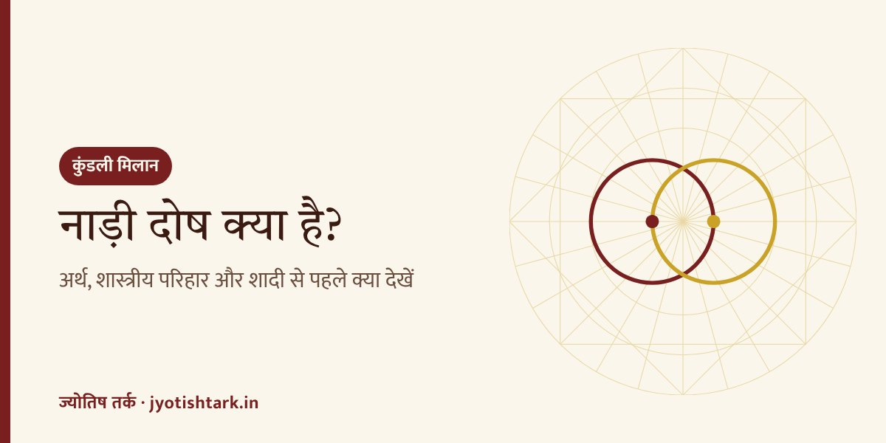

फ्री eBook / PDF
श्रीदुर्गासप्तशती (सम्पूर्ण १३ अध्याय): शुद्ध हिन्दी PDF निःशुल्क डाउनलोड
सम्पूर्ण 13 अध्याय, कवच, अर्गला व कीलक सहित शुद्ध हिन्दी PDF — निःशुल्क डाउनलोड।
Enter just your Name & Date of Birth—or unlock 99.9% Precision by entering your Lagna, Rashi, Nakshatra & Navamsa (D9) placements—to read an exhaustive 12-Chapter analysis of your Personality, Studies, Career, Wealth Leaks, Future Life Partner, All 9 Planets' Mutual Aspects, 337-Bindu Ashtakavarga, and Active Mahadasha–Antardasha with free Mobile PDF save!
कृष्णमूर्ति पद्धति: प्लेसिडस भाव, नक्षत्र स्वामी, सब-लॉर्ड, दशा और शासक ग्रह। ₹299 की विस्तृत रिपोर्ट में विवाह, नौकरी, करियर, धन और विदेश का सब-लॉर्ड विश्लेषण और सहायक समय।
"ज्योतिष ज्ञान से हर समस्या का समाधान संभव है।"
मेरा नाम ज्ञानेंद्र सिंह तोमर है, और मैं लखनऊ से एक समर्पित वैदिक ज्योतिषी हूँ। मेरी जीवन यात्रा विज्ञान और आध्यात्मिकता का एक अनूठा संगम है। एक MBBS छात्र होने के नाते, मेरा दृष्टिकोण हमेशा तार्किक और विश्लेषणात्मक रहा है। यही वजह है कि मेरे मंच का नाम "ज्योतिष तर्क" (Jyotish Tark) है—जहाँ प्राचीन ज्ञान को तर्क और सटीकता के साथ प्रस्तुत किया जाता है।
पिछले कई वर्षों में, मैंने वैदिक ज्योतिष के साथ-साथ लाल किताब (Lal Kitab), अष्टकवर्ग (Ashtakvarga), नवांश (D9), सुदर्शन चक्र, जैमिनी ज्योतिष (Jaimini Astrology) और अंक ज्योतिष (Numerology) का गहन अध्ययन किया है। मेरा उद्देश्य आपको डराना या अंधविश्वास में धकेलना नहीं है, बल्कि आपकी कुंडली का तार्किक विश्लेषण करके करियर, स्वास्थ्य और विवाह से जुड़े प्रश्नों में स्पष्ट और ईमानदार मार्गदर्शन देना है।
Explore our comprehensive Vedic astrology calculators, daily utilities, and energized remedies explained in clear, simple language.
Generate your instant 12-Chapter Life Dossier (Lagna, D9 Navamsa, 337-Bindu Ashtakavarga & Future Partner) or book a hand-made Kundali.
Discover the hidden vibrations in your name and birth date (Mulank & Bhagyank) that govern your career luck, relationships, and destiny.
Krishnamurti Paddhati chart with Placidus houses, star lords and sub-lords — the method known for event timing.
2027 में आपकी दशा, गुरु-शनि का गोचर और हर महीने की अच्छी तारीखें — आपकी जन्म कुंडली से।
महामृत्युंजय, गायत्री, हनुमान, शनि और नवग्रह मंत्र — आपकी ओर से 1100 या 5100 जाप, लखनऊ में नियम से।
आपका मोबाइल नंबर आपके मूलांक और भाग्यांक से कितना मेल खाता है — ग्रह, स्वभाव और 100 में स्कोर।
मन में अपना प्रश्न रखें, 78 कार्ड के डेक से 3 कार्ड चुनें और तुरंत उनका अर्थ पढ़ें — प्रेम, करियर और धन के लिए।
प्रामाणिक नेपाली व वैदिक मंत्रों से अभिमंत्रित रुद्राक्ष (लैब सर्टिफिकेट वैकल्पिक, +₹500) (2 से 9 मुखी एवं गौरी शंकर)। मुफ्त उपहार, धागा और कैश-ऑन-डिलीवरी सुविधा।
तिथि, नक्षत्र, राहु काल, चौघड़िया और लाइव शुभ मुहूर्त — 100+ शहरों (भारत, नेपाल, विदेश) के स्थानीय समय से।
मेष से मीन तक सभी 12 राशियों का दैनिक, साप्ताहिक और वार्षिक राशिफल — असली ग्रह-गोचर से।
वर-कन्या के जन्म विवरण से अष्टकूट गुण मिलान — 36 में से कितने गुण, नाड़ी और भकूट दोष।
लग्न, चंद्र और शुक्र — तीनों से जाँचें कि मंगल दोष है या नहीं, और शास्त्रीय परिहार लागू होते हैं या नहीं।
अपनी राशि या जन्म विवरण डालें — साढ़ेसाती या ढैय्या चल रही है या नहीं, और कब तक।
जन्म विवरण से जानें कि कुंडली में पूर्ण या आंशिक काल सर्प योग है या नहीं — ईमानदार व्याख्या के साथ।
बच्चे का नाम किस अक्षर से रखें? जन्म नक्षत्र और चरण से शुभ नाम अक्षर।
आपका जन्म नक्षत्र, चरण, देवता, गण, ताक़त, कमज़ोरी और करियर — जन्म तिथि और समय से।
नौकरी कब लगेगी, शादी कब होगी, विदेश योग — अपनी कुंडली से एक प्रश्न का उत्तर।
लग्न-नवांश कुंडली, ग्रह स्पष्ट, करियर, धन, जीवनसाथी, दशा और उपाय — पूरी हिंदी कुंडली।
आपके जन्म के क्षण में 9 ग्रह किस राशि और नक्षत्र में थे — एक सुंदर पोस्टर।
सूर्य से केतु तक 9 ग्रह कुंडली के 12 भावों में क्या फल देते हैं — 108 स्थितियाँ सरल भाषा में।
हनुमान चालीसा, शिव चालीसा, ॐ जय जगदीश हरे, गायत्री मंत्र, सुंदरकांड — शुद्ध पाठ, अर्थ सहित।
24 एकादशी, सत्यनारायण (पाँचों अध्याय), सोमवार से शनिवार, संतोषी माता, करवा चौथ — पूरी कथा।
लोहड़ी, मकर संक्रांति, वसंत पंचमी, महाशिवरात्रि, होली — सही तारीख, मुहूर्त, विधि और कथा।
ज्योतिषी ज्ञानेंद्र सिंह तोमर से ऑडियो या वीडियो कॉल पर सीधी बात — पहली 5 मिनट मुफ़्त।

आपकी जन्म कुंडली केवल ग्रहों का एक साधारण नक्शा नहीं है; यह आपके जीवन का वह रहस्यमयी दस्तावेज़ है जो आपके व्यक्तित्व, शिक्षा, करियर, धन, भावी जीवनसाथी और विवाह से जुड़े गहरे रहस्यों को खोलता है। सही समय पर सही मार्गदर्शन जीवन की हर चुनौती को एक सुनहरे अवसर में बदल सकता है।
आप हमारे नए इंस्टेंट 45-मिनट कुंडली एवं लाइफ डॉसियर टूल से हिंदी या अंग्रेजी में अपना विस्तृत विश्लेषण तुरंत पढ़ और PDF डाउनलोड कर सकते हैं, अथवा हमारे विशेषज्ञ ज्योतिषी से हस्तनिर्मित विस्तृत कुंडली रिपोर्ट व वैदिक/लाल किताब उपाय प्राप्त कर सकते हैं।
वैदिक ज्योतिष, दोष उपाय और सिद्ध वैदिक स्तोत्रों पर हमारे सबसे लोकप्रिय लेख पढ़ें:
सम्पूर्ण 13 अध्याय, कवच, अर्गला व कीलक सहित शुद्ध हिन्दी PDF — निःशुल्क डाउनलोड।

नाड़ी दोष का अर्थ, शास्त्रीय परिहार और ब्लड ग्रुप से जुड़े भ्रम — शादी से पहले क्या देखें।

कुंडली में पितृ दोष कैसे बनता है, इसके संकेत क्या हैं और तर्पण, श्राद्ध व दान जैसे शास्त्रीय उपाय कैसे करें।

नज़र दोष को लेकर शास्त्रीय व लोक-मान्यताएँ और नमक, नींबू-मिर्च जैसे पारंपरिक उपाय।

राजा दशरथ रचित शनि स्तोत्र का सम्पूर्ण पाठ, अर्थ और साढ़ेसाती-ढैय्या में पाठ की विधि।

मेष से मीन तक — गुरु, शनि और राहु-केतु के असली गोचर पर आधारित 2027 का भविष्यफल, साढ़ेसाती और मासिक फल के साथ।
Founded in 2020 by Acharya Gyanendra Singh Tomar, Jyotish Tark offers personal guidance in Vedic astrology, numerology and Lal Kitab remedies — every paid kundali is read by him personally.
We combine ancient Parashari and Jaimini wisdom with modern scientific interpretation to provide guidance that's both spiritually profound and practically applicable to your daily life.

Subscribe to @jyotishtark for Live Kundali analysis, health-related astrological guidance (not a substitute for medical treatment) & daily guidance
Thousands have found clarity and direction through our astrological guidance. Check your Free 45-Minute Kundali Dossier or consult our astrologer today.
A: हाँ! आप हमारे Kundali पेज पर जाकर अपना नाम, जन्मतिथि और ग्रहों की स्थिति (लग्न, नक्षत्र, नवांश) दर्ज करके 45-मिनट का विस्तृत जीवन विश्लेषण (व्यक्तित्व, शिक्षा, करियर, धन, भावी जीवनसाथी और महादशा-अंतर्दशा) हिंदी या अंग्रेजी में निःशुल्क पढ़ और PDF डाउनलोड कर सकते हैं।
A: Our online 45-minute Kundali Dossier is free to read and download as PDF. Our complete hand-crafted Kundali report prepared personally by Gyanendra S. Tomar (including exact degrees, Bhava Chalit, 5-year timeline, and personalized Vedic/Lal Kitab remedies) is ₹2,100 (5–7 days). The detailed Sampurna Kundali (35+ pages, instantly after payment) is ₹1,101 — see a sample.
A: भुगतान और विवरण भरने के तुरंत बाद आपकी कुंडली 24–48 घंटे में ईमेल और व्हाट्सएप कर दी जाएगी।
A: Once payment and details are submitted, you'll get your report within 24–48 hours.
A: हाँ, हम हिंदी में सटीक राशिफल, वर्ष 2026 का वैदिक मार्गदर्शन और प्रामाणिक अभिमंत्रित रुद्राक्ष (Rudraksha Store) प्रदान करते हैं।
A: Yes—our Rashifal and complete Kundali Dossier are available in both Hindi and English.
A: हम आपके जन्मतिथि (मूलांक और भाग्यांक) तथा चैल्डियन नाम स्पंदन से आपके व्यक्तित्व और भविष्य के रुझानों पर प्रकाश डालते हैं।
A: We calculate your Psychic Number, Destiny Number, and Chaldean Name Vibration to reveal personality traits and future trends.
शुद्ध देवनागरी में सम्पूर्ण पाठ, सरल अर्थ और विधि — सभी पाठ देखें
रोज़ की पूजा, व्रत और ज्योतिष — सब एक जगह, शुद्ध हिंदी में
आरती कुंजबिहारी कीबगलामुखी माता की आरतीभैरव जी की आरतीबृहस्पति देव की आरतीएकादशी माता की आरतीगंगा मैया की आरतीहनुमान जी की आरतीजय अम्बे गौरी आरतीजय गणेश देवा आरतीजय जय गिरिबरराज किसोरीकाली माता की आरतीॐ जय जगदीश हरे आरतीॐ जय लक्ष्मी माता आरतीॐ जय शिव ओंकारा आरतीॐ जय सरस्वती माता आरतीसत्यनारायण जी की आरतीशनि देव की आरतीसुखकर्ता दुःखहर्ता आरतीतुलसी माता की आरती
दैनिक प्रार्थना मंत्रदुर्गा कवचश्रीदुर्गासप्तशतीश्री गणपति अथर्वशीर्षगायत्री मंत्रहनुमान बाहुककनकधारा स्तोत्रमधुराष्टकममहामृत्युंजय मंत्रमहिषासुरमर्दिनि स्तोत्रमैया मोरी मैं नहिं माखन खायोनवदुर्गा ध्यान मंत्र व या देवी सर्वभूतेषुनिर्वाण षट्कमपायो जी मैंने राम रतन धन पायोरघुपति राघव राजारामश्री राम रक्षा स्तोत्रसंकट मोचन हनुमानाष्टकशिव पंचाक्षर स्तोत्रशिव रुद्राष्टकमश्रीरामचन्द्र कृपालु भजु मनसिद्ध कुंजिका स्तोत्रठुमक चलत रामचंद्रवैष्णव जन तो तेने कहियेविष्णु सहस्रनाम स्तोत्रसुंदरकांड पाठश्री सूक्तभवानी अष्टकम
आमलकी एकादशी व्रत कथाअपरा एकादशी व्रत कथादेवशयनी एकादशी व्रत कथादेवउठनी एकादशी व्रत कथाएकादशी व्रत कथागुरुवार व्रत कथाइंदिरा एकादशी व्रत कथाजया एकादशी व्रत कथाकामदा एकादशी व्रत कथाकामिका एकादशी व्रत कथाकरवा चौथ व्रत कथामोहिनी एकादशी व्रत कथानिर्जला एकादशी व्रत कथापापांकुशा एकादशी व्रत कथापापमोचनी एकादशी व्रत कथापरमा एकादशी व्रत कथापरिवर्तिनी एकादशी व्रत कथापौष पुत्रदा एकादशी व्रत कथाप्रदोष व्रत कथारमा एकादशी व्रत कथासंतोषी माता व्रत कथासफला एकादशी व्रत कथासत्यनारायण व्रत कथाशनिवार व्रत कथाषटतिला एकादशी व्रत कथाश्रावण पुत्रदा एकादशी व्रत कथासोमवार व्रत कथावैभव लक्ष्मी व्रत कथावरूथिनी एकादशी व्रत कथाविजया एकादशी व्रत कथायोगिनी एकादशी व्रत कथा
जन्म-आकाश पोस्टरधनु राशिकाल सर्प दोष कैलकुलेटरकन्या राशिकुंभ राशिमीन राशितुला राशिवृश्चिक राशिसाप्ताहिक राशिफल
मेष और वृषभ की जोड़ीअनुराधा नक्षत्रभरणी नक्षत्रबुध अष्टम भाव मेंचंद्र दशम भाव मेंचंद्र द्वितीय भाव मेंचंद्र नवम भाव मेंगुरु अष्टम भाव मेंकन्या और तुला की जोड़ीकर्क और धनु की जोड़ीकर्क और कन्या की जोड़ीकर्क और कर्क की जोड़ीकर्क और कुंभ की जोड़ीकर्क और मकर की जोड़ीकर्क और मीन की जोड़ीकर्क और सिंह की जोड़ीकर्क और तुला की जोड़ीकर्क और वृश्चिक की जोड़ीकेतु द्वितीय भाव मेंकेतु षष्ठ भाव मेंकृत्तिका नक्षत्रमेष और कर्क की जोड़ीमेष और मीन की जोड़ीमिथुन और कन्या की जोड़ीमिथुन और कर्क की जोड़ीमृगशिरा नक्षत्रपूर्वा फाल्गुनी नक्षत्रराहु प्रथम भाव मेंशनि नवम भाव मेंशनि प्रथम भाव मेंशनि तृतीय भाव मेंसिंह और वृश्चिक की जोड़ीसूर्य दशम भाव मेंतुला और मकर की जोड़ीविशाखा नक्षत्रवृषभ और कर्क की जोड़ीवृषभ और मीन की जोड़ीवृश्चिक और कुंभ की जोड़ी
ऑडियो या वीडियो कॉल पर अपनी कुंडली और प्रश्नों पर बात करें। पहली 5 मिनट की कॉल मुफ़्त — पूरा शुल्क देखें
लखनऊ के अनुसार सटीक मुहूर्त, पूजा विधि, मंत्र और कथा — पूरा त्योहार कैलेंडर देखें
स्वभाव, नाम अक्षर, करियर, विवाह, 2026–27 गोचर, साढ़ेसाती और उपाय — सभी 12 राशियां देखें